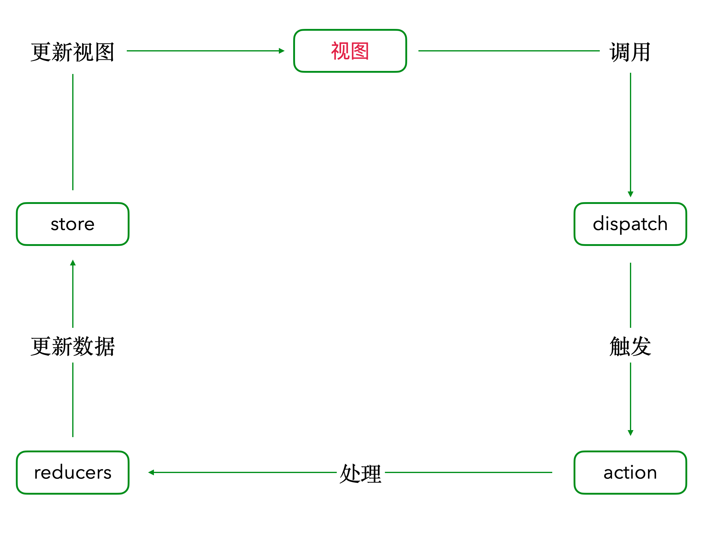

# Redux
- 安装 redux(状态管理):
npm install redux - 创建一个 React Redux 应用程序:
npx create-react-app my-app --template redux
# store: state状态管理器
- 创建一个
Redux store来存放应用中所有的state。 - 整个应用中
有且仅有一个 store。 - 创建方式:
import { createStore } from 'redux'
import reducer from './reducer'
const store = createStore(reducer)
export default store
// 上面代码中，createStore函数接受另一个函数作为参数，返回新生成的 Store 对象。
- 可以理解为，store 是 state 和 view 链接的桥梁。(毕竟创建 store 的元素包含 reducer, 更新state 需要 action 对象的 type 来触发reducer)
# State
- 应用中所有的
state都以一个对象树的形式储存在一个单一的 store中。(唯一改变 state 的办法是触发 action ) - 操作state
state 的变化要通过store对象的 dispatch() 方法来实现。(传递一个 action 对象给 reducer处理)- 必须要通过 store API 操作 state, react 中的 view 才会更新.
store.dispatch(action) - 获取state:
store.getState() 根据 action 的信息来改变 state 树，需要编写 reducers。
# reducer
- 作用:
根据 action 对象的type 来更新状态 - 工作方式:
- 接收一个 state 参数, 作为初始的 state
- 接收一个action对象, 在函数体中用 switch 语句 判断 action 的type, 然后定义相应的处理方式( 返回新的 state 对象)。
- reducer 函数示例:
- 在示例中, 根据
action.type 属性来执行对应的 switch 语句 - redux 要求,
reducer 每次返回的对象(state)必须是新的对象. - 所以我们可以在函数体中创建新对象, 或者是通过 Object.assign({}, ...sources)的方法来实现.
- 在示例中, 根据
const reducer = (state = initialState, action) => {
switch (action.type) {
case "ADD":
return Object.assign({}, state, {
count: state.count + action.num
});
case "REDUCE":
return Object.assign({}, state, {
count: state.count - action.num
});
default:
return state;
}
};
# Action
- 一个
具有 type 属性的哈希对象, 作为 reducer 函数中 switch 语句的开关。 - 创建一个 action:
// create actions
const ADD_ACTION = "ADD";
const REDUCE_ACTION = "REDUCE";
const add = num => {
return {
type: ADD_ACTION,
num
};
};
const reduce = num => {
return {
type: REDUCE_ACTION,
num
};
};
# redux 工作流程
- 首先
声明 action对象。需要声明type 属性。 - 定义
reducer 函数。 - 创建
store 对象。let store = createStore(reducer)。调用 store 对象API
# action, Reducer, store 之间的关系
- action 是一个哈希对象.
- reducer 中定义如何根据 action 来操作 state.
- store 接收 reducer 作为参数
- 通过 store 的 api 来接收 action 以调用 reducer
store.dispatch(action)
state 保存数据。reducer定义处理数据的规则。action触发某种规则
# 示例代码
import React from "react";
import ReactDOM from "react-dom";
import Redux, {createStore} from "redux";
// create actions
const ADD_ACTION = "ADD";
const REDUCE_ACTION = "REDUCE";
const add = num => {
return {
type: ADD_ACTION,
num
};
};
const reduce = num => {
return {
type: REDUCE_ACTION,
num
};
};
// initialize a state
const initialState = {
count: 0
};
// create a reducer
const reducer = (state = initialState, action) => {
switch (action.type) {
case "ADD":
return Object.assign({}, state, {
count: state.count + action.num
});
case "REDUCE":
return Object.assign({}, state, {
count: state.count - action.num
});
default:
return state;
}
};
function getCurrentState() {
return reduxStore.getState();
}
function addState() {
reduxStore.dispatch(add(1));
console.log(getCurrentState());
}
function reduceState() {
reduxStore.dispatch(reduce(1));
console.log(getCurrentState());
}
const reduxStore = createStore(reducer);
console.log(reduxStore.getState());
class App extends React.Component {
constructor(props) {
super(props);
//初始化 state
this.state = getCurrentState();
}
render() {
return (
<div>
<h1>A Redux Example, open console to check results.</h1>
<button onClick={addState}>add</button>
<button onClick={reduceState}>reduce</button>
</div>
);
}
}
const rootElement = document.getElementById("root");
ReactDOM.render(<App/>, rootElement);
# redux 中间件(middleware)
- 主要用于
处理异步数据流; redux中间件的实质是对store的dispatch进行重写和包装，修改store.dispatch的默认行为;- redux中间件是对
redux功能的一种扩展，也是扩展dispatch的唯一标准方式; - 特点:
可以链式调用 - 对于
链式调用，后一个中间件的修改是基于前一个中间件修改的基础上进行的; - 中间件函数的形式描述为:
({ getState, dispatch }) => next => action
# applyMiddleware
← ReactRouter Redux2 →